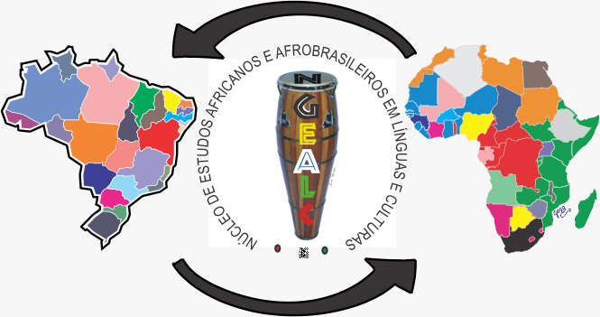
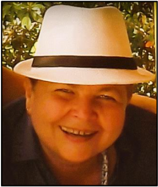

NGEAALC
Butula
O Ngeaalc
Apresentação
Pesquisadores
Estudantes
Técnicos
Colaboradores Internacionais
Estatuto
Regimento
Linhas de Pesquisas
Instituições Parceiras
Egressos
Projetos
Eventos
Revista
Publicações
Artigos
Livros
Teses
Outras Produções
Contato
NGEAALC -
NUCLEO
DE
ESTUDOS
AFRICANOS
E
AFRODESCENDENTES
EM
LINGUAS
E
CULTURA

Butula
O Ngeaalc
Apresentação
Pesquisadores
Estudantes
Técnicos
Colaboradores Internacionais
Estatuto
Regimento
Linhas de Pesquisas
Instituições Parceiras
Egressos
Projetos
Eventos
Revista
Publicações
Artigos
Livros
Teses
Outras Produções
Contato
Tecnicos

Nome:
Ana Pessoa de Souza Castro
Link do Lattes:
http://lattes.cnpq.br/3763946124884641
Link do ORCID:
https://orcid.org/0000-0002-5160-9057
Linha de Pesquisa:
1. Culturas Negro-africanas no Brasil; 3. Patrimônio Cultural, Memória, História e Acervos; 4. Educação e Interseccionalidades
Áreas de Interesse:
Pesquisas relacionadas à valorização e sustentabilidade do turismo cultural, com foco especial na Bahia, além de pesquisas sobre Cultura e Afrodescendência
E-mail:
Pós-Graduada em História e Culturas Africanas e Afrobrasileiras. Chefe do Setor de Gestão Administrativa e Financeira da Pró-Reitoria de Ensino de Graduação da Universidade Federal da Bahia (PROGRAD/UFBA). Foi Tradutora Oficial da Assessoria de Comunicação (ASCOM) da Secretaria de Turismo do Estado da Bahia, sendo responsável pela tradução do Portal Oficial do Turismo do Estado da Bahia: http://bahia.com.br/, bem como dos seus hotsites. Também faz traduções para o Instituto de Radiodifusão do Estado da Bahia (IRDEB)/TVE Bahia, onde é tradutora oficial do portal http://carnaval.ba.gov.br/. Tem vasta experiência como assistente de pesquisa nas áreas de etnolinguística e antropologia, e como auxiliar na composição e tradução de textos técnicos e livros nestas mesmas áreas. Também atuou na pesquisa sobre línguas africanas para a montagem do Museu da Língua Portuguesa na Estação da Luz, em São Paulo. Foi tradutora oficial no 12º Congresso da ONU sobre Prevenção ao Crime e Justiça Criminal. Graduada em Administração de Empresas pela Universidade Católica do Salvador - UCSAL (2006). Pesquisadora do Núcleo de Estudos Africanos e Afro-Brasileiros em Línguas e Culturas (NGEAALC/UNEB).
Nome:
Antonio Cesar Araújo Santana
Link do Lattes:
http://lattes.cnpq.br/0139130452852566
Link do ORCID:
https://orcid.org/0000-0003-0063-5367
Linha de Pesquisa:
3. Patrimônio Cultural, Memória, História e Acervos
Áreas de Interesse:
Recursos de computação (produção, armazenamento, transmissão e o acesso); Programação, Segurança da informação, Redes, Banco de Dados, Análise de Sistemas; Bibliotecas e Centros de documentação digitais
E-mail:
acssantana@uneb.br
Graduando em Ciências da Computação, pela Universidade de Salvador (UNIFACS). Tecnico do Núcleo de Estudos Africanos e Afro-brasileiros em Línguas e Culturas (NGEAALC/UNEB). Atualmente está como estagiário na área de Tecnologias da Informação na Universidade do estado da Bahia (UNEB).
Nome:
Karine Janaina Santos Costa
Link do Lattes:
http://lattes.cnpq.br/3901927770877551
Link do ORCID:
https://orcid.org/0000-0002-5160-9057
Linha de Pesquisa:
3. Patrimônio Cultural, Memória, História e Acervos
Áreas de Interesse:
Produção executiva, cultura, rádio, divulgação, assessoria de imprensa e atendimentos; Criação de novos sites, atualização e manutenção de institucionais (arquitetura de informação, layout, implementação, publicação); Redação e edição de notícias publicadas em site institucional.
E-mail:
Formada em Comunicação Social, com habilitação em Publicidade e Propaganda, pela Faculdade da Cidade do Salvador (FCSal). Estive a frente da organização, agendamento de atividades culturais e acadêmicas, assessoria de comunicação interna e externa e coordenação de grupo de trabalho do Centro de Estudos dos Povos Afro-Índios Américas (CEPAIA), órgão vinculado à Universidade do Estado da Bahia. Tem experiência em Coordenação, planejamento, execução e monitoramento de campanhas institucionais, bem como concepção e produção de ações de marketing promocional. Pesquisadora do Núcleo de Estudos Africanos e Afro-Brasileiros em Línguas e Culturas (NGEAALC/UNEB).
Nome:
Rosana Soares Garcia
Link do Lattes:
http://lattes.cnpq.br/3901927770877551
Link do ORCID:
https://orcid.org/0000-0002-5160-9057
Linha de Pesquisa:
3. Patrimônio Cultural, Memória, História e Acervos
Áreas de Interesse:
Gestão de Documentação e Difusão de Conhecimento; Probabilidade e Estatística.
E-mail:
Possui graduação em Ciências Estatísticas, pela Escola Superior de Estatística da Bahia (1989). Especialização em Arquivologia, pela Universidade do Estado da Bahia (UNEB), com conhecimento na área de Gestão de Documentação e Difusão de Conhecimento. Tem experiência na área de Probabilidade e Estatística. Pesquisadora do Núcleo de Estudos Africanos e Afro-Brasileiros em Línguas e Culturas (NGEAALC/UNEB).